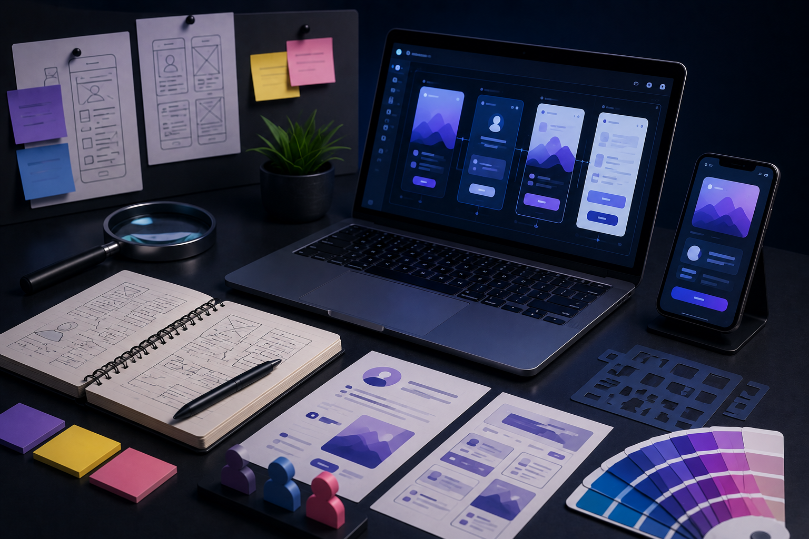

User research and journey mapping
We uncover how people actually move through your product — pain points, drop-offs, and opportunities — so design starts from evidence, not assumptions.
We research, prototype, and design interfaces that are intuitive, accessible, and aligned with user and business goals. Design decisions are intentional and measurable — not subjective decoration.

From discovery through handoff, we shape experiences that users understand and teams can ship with confidence.
We uncover how people actually move through your product — pain points, drop-offs, and opportunities — so design starts from evidence, not assumptions.
Low- and high-fidelity prototypes let stakeholders test flows early, align on structure, and catch issues before engineering invests heavily.
Clear visual systems, hierarchy, and interaction patterns that feel polished on every screen size — built for clarity and conversion.
We validate designs with real feedback, prioritize the highest-friction journeys, and refine until the experience holds up under use.
Reusable components, spacing rules, and implementation-ready specs so development stays consistent long after launch.
A structured, insight-driven path from research to a shippable experience.
Audience research, competitor context, and business goals that frame every design decision.
Information architecture and user flows that map the clearest path to outcomes.
Visual design and interactive prototypes iterated with your feedback in the loop.
Clean specs, design QA, and iteration support so the shipped product matches the intent.
Products where research-led design shaped the experience.
Everything you need to know about working with us on design.
We combine research, journey mapping, wireframes, and interactive prototypes to test assumptions early — so teams have clearer evidence before engineering effort is committed.
Yes. We often work inside an existing interface, identify the highest-friction journeys, and prioritize improvements that raise clarity and conversion without a full reset.
Typical outputs include research summaries, user flows, wireframes, prototypes, interface systems, and implementation-ready designs with handoff notes for development.
Yes. We can support design QA, implementation reviews, and iteration after release so the shipped product stays aligned with the original experience goals.
Tell us about your product, audience, and goals — we’ll help you define the right experience and ship it well.